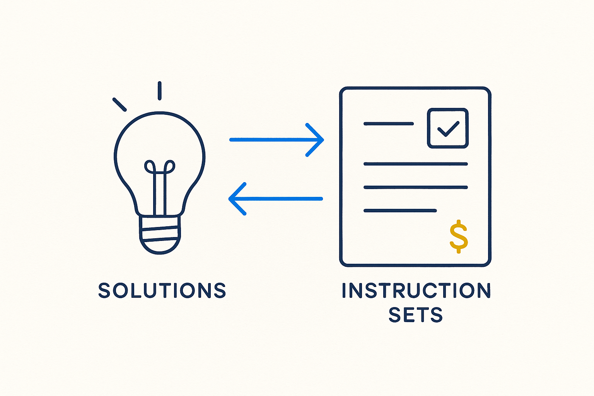

Generate the instruction sets that drive the whole pipeline from existing, proven solutions — a reusable, teachable, paid skill set, and a testable offering.

> Generate the instruction sets that drive the whole pipeline from existing, proven solutions — a reusable, teachable, paid skill set, and a testable offering.
The engine that makes the pipeline repeatable is its instruction sets — the rules, skills and prompts that tell the AI how to scrape, analyze, interview, enrich and generate. And the sharp move is where those instructions come from: not invented from scratch each time, but generated from existing, proven solutions. Look at a working data platform, a good model, a mature transformation library, and derive the instruction set that reproduces its logic in the BTM way. The best of what already works becomes the recipe for what you build next.
This is the concrete offering. Turning a set of existing solutions into a reusable instruction set — one that a team (or an AI) can run to build their own company brain — is a skill, and it is deliverable and paid. It is also testable: run the instruction set against a known solution and check that the resulting metadata, rules and generated artifacts match. That test is what makes it a product rather than a promise.
It sits on not reinventing the wheel and feeds vibe-coding: the instruction sets are what let you generate powerful apps and pipelines fast, grounded in proven logic rather than guesswork. Distill the solution, capture the instructions, sell the skill.
Where it lives: the signature principle of Breakthrough Modeling — the reusable, paid engine derived from proven solutions.